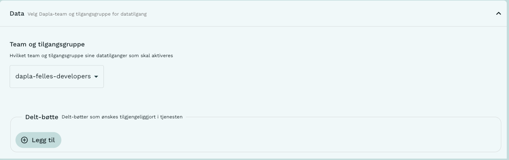

Jobbe med data
I denne artikkelen viser vi hvordan man leser og skriver forskjellige filtyper på Dapla med Python og R. Vi har skrevet egne artikler for deling av data, flytting av data mellom bøtter (transfer service), pseudonymisering. Vi har også skrevet om kartdata og datavalidering med pandera.
Lese og skrive data på Dapla
Vi bruker Python og R når vi skal lese, skrive og bearbeide data. Dette må gjøres fra en av Dapla lab-tjenestene (for eksempel jupyter). Dette er fordi Dapla lab er koblet opp mot Google Cloud Storage.
Tidligere har vi vært avhengige av Python-pakken dapla-toolbelt og R-pakken fellesR. Nå trenger man ikke ta spesielle hensyn: man leser og skriver data som om man jobber lokalt. Man bruker altså pandas for Python og arrow for R.
Bøttemontering og teamtilhørighet
For å få tilgang til data på Google Cloud må man kjøre Python/R fra Dapla lab. Første steg er altså å starte en instans av VSCode, Jupyter eller RStudio fra Dapla lab.
Når man starter tjenesten må man være obs på hvilket team man representerer i den tjenesten. På dapla styres datatilgang etter Dapla team. Du må derfor velge riktig dapla team under tjenestekonfigurasjonen. Tjenestekonfigurasjonen kan du lese om i blant annet jupyter-artikkelen vår.

Man må naturligvis vite hvor dataene ligger, men vi trenger ikke hele filstien! Dapla lab er bøttemontert: det vil si at vi kan forenkle filstier til buckets/{bøttenavn}/{filnavn} (gs://ssb-dapla-felles-data-produkt-prod er ikke lenger nødvendig å ha i filstien).
Dapla Felles er et team der alle i SSB er med i developers-gruppa. Kode-eksemplene finnes for både R og Python, og du kan velge hvilken du skal se ved å trykke på den arkfanen du er interessert i.
Lese og skrive filer
Under finner du eksempler på hvordan du kan lese og skrive data på Dapla. Kode-eksemplene finnes for både R og Python og du kan velge hvilken du skal se ved å trykke på den arkfanen du er interessert i.
Parquet
notebook
import pandas as pd
file_path = "/buckets/produkt/datadoc/brukertest/10/sykefratot/klargjorte-data/person_testdata_p2021_v1.parquet"
# Les med pd.read_parquet()
df = pd.read_parquet(file_path)
# Skriv med to_parquet()
df.to_parquet(file_path )notebook
library(arrow)
file_path = "/buckets/produkt/datadoc/brukertest/10/sykefratot/klargjorte-data/person_testdata_p2021_v1.parquet"
# Les med arrow::read_parquet()
person_testdata <- arrow::read_parquet(file_path)
# Skriv med arrow::write_parquet()
arrow::write_parquet(person_testdata, file_path)Vi kan også filtrere hvilke variabler vi ønsker å lese inn ved å spesifisere parameter col_select. For eksempel:
person_testdata <- arrow::read_parquet(file_path,
col_select = c("fnr", "sivilstand"))Kartdata lagret som .parquet kan leses inn ved å kombinere funksjonen open_dataset fra pakken arrow og read_sf_dataset fra pakken sfarrow.
library(arrow)
library(sfarrow)
library(tidyverse)
data <- arrow::open_dataset("/buckets/produkt/GIS/Kart/2023/ABAS_grunnkrets_flate_2023/ABAS_grunnkrets_flate_2023.parquet") %>%
dplyr::filter(KOMMUNENR == "0301") %>%
sfarrow::read_sf_dataset()Tekstfiler
notebook
import pandas as pd
file_path = "/buckets/produkt/dapla-manual-examples/purchases.csv"
# Les med pd.read_csv()
df = pd.read_csv(file_path, sep=';')
# Skriv med df.to_csv()
df.to_csv()notebook
import pandas as pd
file_path = "/buckets/produkt/dapla-manual-examples/test.json"
# Les med pd.read_json()
df = pd.read_json(file_path)
# Skriv med df.to_json()
df.to_json(file_path)notebook
file_path = "/buckets/produkt/dapla-manual-examples/purchases.csv"
# Les med read.csv2()
dt_1987 <- read.csv2(file_path) #bruk read.csv2 for semikolonseparerte filer
# OBS: bruk read.csv() for kommaseparerte filer
# Skriv med write.csv2()
write.csv2(dt_1987, file_path)notebook
library(jsonlite)
file_path = "/buckets/produkt/dapla-manual-examples/test.json"
# Les med jsonlite::fromJSON()
data <- jsonlite::fromJSON(file_path)
# Skriv med jsonlite::toJSON()
jsonlite::toJSON(data, file_path)xlsx
notebook
import pandas as pd
file_path = "/buckets/produkt/dapla-manual-examples/test.xlsx"
# Les med pd.read_excel()
df = pd.read_excel(file_path)
# Skriv med df.to_excel()
df.to_excel(file_path)XLSX-filer kan leses inn med funksjonen read.xlsx fra pakken openxlsx.
notebook
library(openxlsx)
file_path = "/buckets/produkt/dapla-manual-examples/purchases.xlsx"
# Les med openxlsx::read.xlsx()
data <- openxlsx::read.xlsx(file_path)
# Skriv med openxlsx::write.xlsx()
openxlsx::write.xlsx(data, file_path)SAS
Her er et eksempel på hvordan man leser inn en sas7bdat-fil på Dapla som har blitt generert i prodsonen.
notebook
import dapla as dp
file_path = "/buckets/produkt/dapla-manual-examples/statbank_ledstill.sas7bdat"
# Les med pd.read_sas()
pd.read_sas(file_path, file_format="sas7bdat", encoding="latin1")Legg merke til at det ikke lenger er nødvendig med full filsti. I tilfellene vist over ville man tidligere skrevet filstiene på denne måten: gs://ssb-dapla-felles-data-produkt-prod/dapla-metrics/test.parquet
Nå skjønner maskinen at den skal lete under ssb-dapla-felles fordi dette er teamet vi valgte under tjenestekonfigurasjon
Så enkelt er det! Men…
Når vi jobber med data på dapla må vi ta stilling til og følge obligatoriske standarder, for eksempel navnestandarden. Versjonering av datasett er viktig i denne sammenheng. Å jobbe med data krever i praksis mer enn de tekniske ferdighetene til å lese, behandle og skrive data.
For å lære hvordan du bruker R og Python til databehandling må man foreløpig ut av manualen. Vi anbefaler at du bruker deler av dokumentet Kom i gang med Dapla skrevet av A200 støtteteam.
For databehandling i R anbefaler vi ???
Filbehandling
Slette filer
Å slette filer fra lagringsområdet kan gjøres på flere måter. Man kan gjøre det med pek-og-klikk i Google Cloud Console eller med Python og R:
notebook
import os
file_path = "fil/sti.parquet"
os.remove(file_path)Funksjonen file.remove kan brukes til å slette data på lagringsområdet.
notebook
# Skriv inn full filsti til filen som skal slettes
file_path = "fil/sti.parquet"
file.remove(file_path)Kopiere filer
notebook
import shutil
# Path to folders
from_folder = "/buckets/produkt/felles/veiledning/python/eksempler/purchases"
to_folder = "/buckets/produkt/felles/veiledning/python/eksempler"
# Copy file
shutil.copy(f"{from_folder}/data.parquet",
f"{to_folder}/data_copy.parquet")Dette fungerer også for å kopiere filer mellom bøtter. [gjør det det???]
Console
# Skriv inn filnavn på filen som skal flytte og navn på bøtta hvor filen ligger.
file_name = "purchases.csv"
bucket_path_gammel = "/buckets/produkt/dapla_manual-examples/"
#Skriv inn ny (hvis ikke bøtta finnes må den opprettes - se Opprette mapper under)
bucket_path_ny = "/buckets/produkt/dapla_manual-examples/ny_mappe/"
#Hvis du bare vil endre plassering skriver du:
file.copy(from = paste0(bucket_path_gammel,file_name), to = paste0(bucket_path_ny,file_name))
#Hvis du også vil endre navnet på filen kan du skrive:
new_name = "innkjoep.csv"
file.copy(from = paste0(bucket_path_gammel,file_name), to = paste0(bucket_path_ny,new_name))Merk at funksjonen file.copy() bevarer den opprinnelige filen. Hvis du heller ønsker å flytte filen (dvs å kopiere og slette den opprinnelige filen) velg file.rename().
Flytte (klippe/lime) filer
notebook
import shutil
# Path to folders
from_folder = "/buckets/produkt/felles/veiledning/python/eksempler/purchases"
to_folder = "/buckets/produkt/felles/veiledning/python/eksempler"
# Copy file
shutil.move(f"{from_folder}/data.parquet",
f"{to_folder}/data.parquet")Console
# Skriv inn filnavn på filen som skal flyttes og navn på bøtta hvor filen ligger nå.
file_name = "purchases.csv"
bucket_path_gammel = "/buckets/produkt/dapla_manual-examples/"
#Skriv inn navn på den nye plasseringen (hvis ikke bøtta finnes må den opprettes - se Opprette mapper under)
bucket_path_ny = "/buckets/produkt/dapla_manual-examples/ny_mappe/"
#Hvis du bare vil endre plassering skriver du:
file.rename(from = paste0(bucket_path_gammel,file_name), to = paste0(bucket_path_ny,file_name))
#Hvis du også vil endre navnet på filen kan du skrive:
new_name = "innkjoep.csv"
file.rename(from = paste0(bucket_path_gammel,file_name), to = paste0(bucket_path_ny,new_name))Merk at funksjonen file.rename() sletter den opprinnelige filen. Hvis du bare vil kopiere uten å slette den opprinnelige filen velg file.copy().
Opprette mapper
Selv om bøtter ikke har mapper med en hierarkisk struktur slik man er kjent med fra klassike filsystemer, så kan man opprette det som ser ut som mapper i objektnavnet. I realiteten blir bare / oppfattet som en del av navnet på objektet. Skulle du likevel ønske å opprette dette så kan du gjøre det følgende måte:
notebook
import os
#Path to folder
new_folder_path = '/buckets/produkt/felles/veiledning/python/eksempler/testmappe/'
# Create folder
os.mkdir(new_folder_path)Console
# Skriv inn navnet på den nye mappen.
ny_mappe = "/buckets/produkt/dapla_manual-examples/testmappe/"
dir.create(ny_mappe)Dapla-manualen - Jobbe med data Dapla-manualen - Jobbe med data Dapla-manualen - Jobbe med data Dapla-manualen